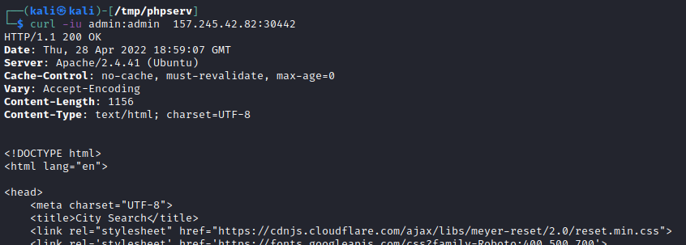

• Curl Without Credentials As we can see we get Access denied in the response body, and we also get Basic realm="Access denied" in the WWW-Authenticate header, which indeed confirms that this page indeed used basic HTTP auth
• Curl with Credentials Basic Auth ◇ Use the -u option  ◇ through the URL